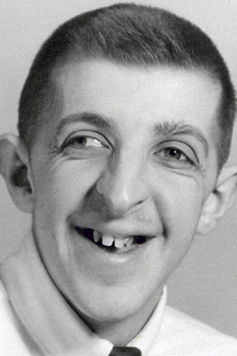

The University of Toledo Foundation
2014 UT Foundation Annual Report
Donors’ Generous Foresight Provides Significant Support
Louise Collins, pictured at top with her daughter, Susan Pennell, at a 2004 Medical College of Ohio event, established a professorship in memory of her son, Vick, bottom.
Many of The University of Toledo’s alumni and friends show their support of UT during their lifetime through annual gifts or a larger, one-time gift to establish an endowment. While every contribution helps to further UT’s mission and is appreciated, planned or estate gifts offer giving advantages of which donors may not be aware.
Over the past year, UT received planned gifts through a variety of giving vehicles, according to Paul Hood, UT Foundation director of planned giving. “Our donors and their advisors can get fairly creative with a planned gift within the guidelines of the tax laws,” he said. “They employed several different planned giving techniques during the past year.”
Will and Trust Bequests
The most popular and flexible of the legacy giving vehicles is a bequest through a donor’s will or trust, Mr. Hood said.
“A will or trust gift doesn’t cost anything out of pocket during a donor’s lifetime, and it can be changed down the road as circumstances warrant,” he said.
In 2014, the UT Foundation received a $2 million bequest gift from Louise Collins, to establish the Edmund Vickroy Collins Professorship in the UT department of pediatrics. The fund, established in memory of her son, will support research, innovative diagnostic services, and clinical services in support of treatment for children with disabilities.
Charitable Gift Annuities
Another popular type of planned gift—the charitable gift annuity—is a simple, but irrevocable, agreement with the UT Foundation, Mr. Hood said. In exchange for such a donation, the UT Foundation agrees to pay an annual annuity for life to one or two individuals.
“If you reserve the annuity for yourself, you receive an annuity payment at least annually. You also receive an income tax charitable deduction equal to the UT Foundation’s share of the donation,” explained Mr. Hood. “Finally, you receive an irrevocable promise from the UT Foundation, backed by its assets, to pay the annuity. Because your annuity payout is tied to your age, it is not unusual for donors to significantly increase their returns on money that might have been invested in CDs.”
Cathy Sheets (Bus ’86, MBA ’92) created a deferred charitable gift annuity to benefit UT as a way to give back for all the University had given her. “With the ease of getting income illustrations and documents, the gift sells itself when the time is right,” she said, “and there was no pressure to change any of my intentions.” She added that the UT Foundation is a great fund steward, working to maximize the impact of gifts.
Charitable Remainder Trusts
Somewhat similar to a charitable gift annuity, a charitable remainder trust is a separate trust that donors create for their own—and possibly a loved one’s—benefit, with the UT Foundation receiving what is left at the end of the trust term.
“You can set up a charitable remainder trust while you are alive, or you can plan for it to come into existence at your death,” said Mr. Hood. “Charitable remainder trusts make it possible to defer capital gains tax after selling appreciated property while putting the entire sales proceeds to work for you.”
He noted that charitable remainder trusts also can increase the rate of return on assets. “If you set up a charitable remainder trust during your lifetime, you’ll get an income tax charitable contribution deduction equal to the fair market value of the property, less the value of the income interest.”
A charitable remainder trust set up by long-time UT supporter Jim Findlay before he passed away in October 2013 provided nearly $300,000 to benefit the University. Mr. Findlay (Bus ’49), designated the gift for three funds he had previously established in the Colleges of Business and Innovation, the Judith Herb College of Education, and the athletics department.
A charitable remainder trust also was the giving vehicle choice for Richard Gordon (Ed ’54, MEd ’60) and his wife, Barbara (Ed ’55). After Mr. Gordon passed away in 1999 and Mrs. Gordon died in 2008, UT received $21,000 in 2014 in support of the Judith Herb College of Education, the College of Communication and the Arts, and the athletics department.
Life Insurance
For donors such as Lt. Col. Joe Pierce (Eng ‘84), a life insurance policy was a means of making a significant gift to UT during his lifetime that will benefit UT later.
By donating an insurance policy this past year with a face value of $50,000, Mr. Pierce’s gift will endow the College of Engineering’s Thorbjornsen Fund, in memory of a favorite professor, when the policy matures after his death.
“A life insurance policy gift can be made economically to provide a bigger impact than a cash gift,” noted Mr. Hood. “Donors who donate a life insurance policy during their lifetime are entitled to an income tax charitable contribution deduction that is essentially equal to the fair market value of the donated policy. And the donor would receive another deduction for the amount of the premium that he or she pays annually.”
For more information about making a planned gift to The University of Toledo Foundation, contact Paul Hood at paul.hood@utoledo.edu or 419-530-5303.